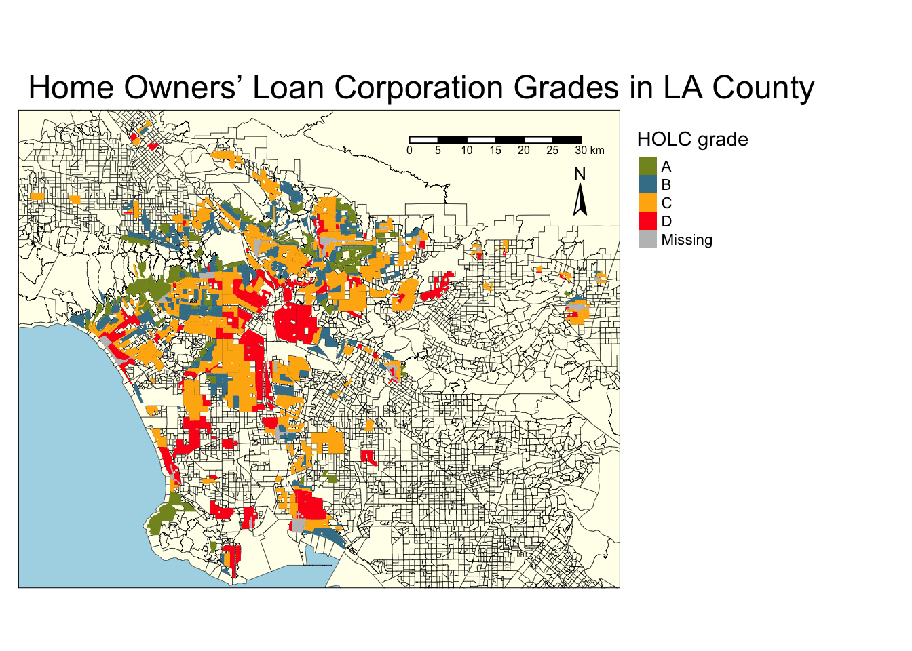
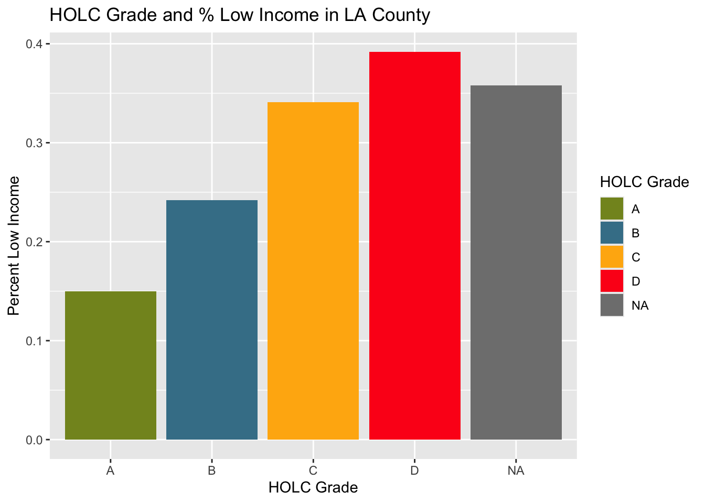
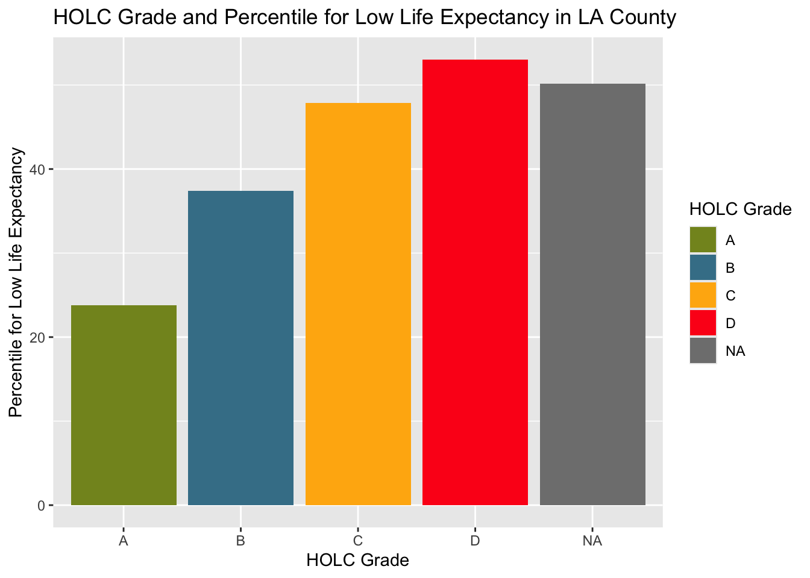
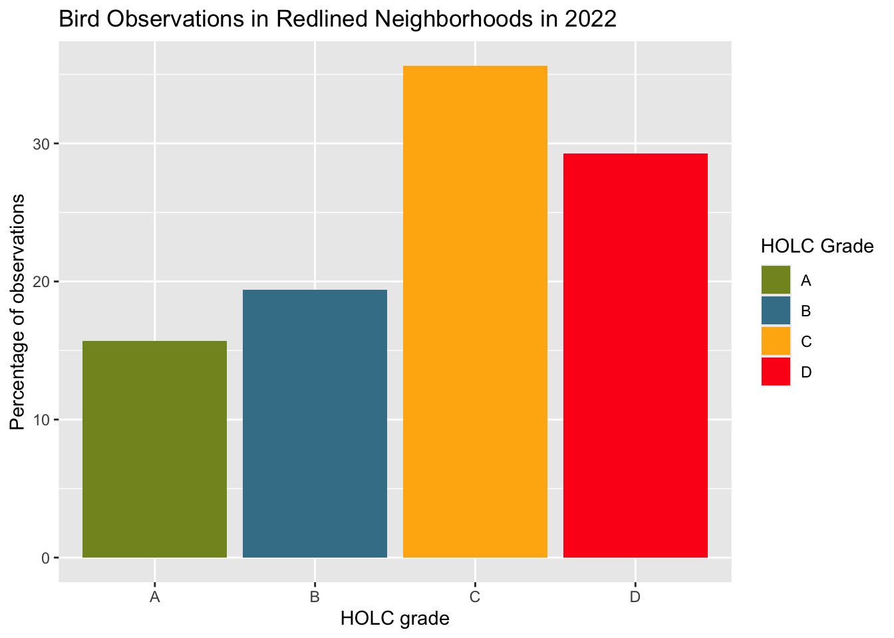

── Attaching core tidyverse packages ──────────────────────── tidyverse 2.0.0 ──
✔ dplyr 1.1.4 ✔ readr 2.1.5
✔ forcats 1.0.0 ✔ stringr 1.5.1
✔ ggplot2 3.5.1 ✔ tibble 3.2.1
✔ lubridate 1.9.3 ✔ tidyr 1.3.1
✔ purrr 1.0.2
── Conflicts ────────────────────────────────────────── tidyverse_conflicts() ──
✖ dplyr::filter() masks stats::filter()
✖ dplyr::lag() masks stats::lag()
ℹ Use the conflicted package (<http://conflicted.r-lib.org/>) to force all conflicts to become errors
library(here)
here() starts at /Users/jocardelle/MEDS/Fall_24/EDS-223-geospatial/holc-biodiversity
library(tmap)
Breaking News: tmap 3.x is retiring. Please test v4, e.g. with
remotes::install_github('r-tmap/tmap')
library(sf)
Warning: package 'sf' was built under R version 4.4.1
Linking to GEOS 3.11.0, GDAL 3.5.3, PROJ 9.1.0; sf_use_s2() is TRUE
library(dplyr)library(kableExtra)
Attaching package: 'kableExtra'
The following object is masked from 'package:dplyr':
group_rows
library(testthat)
Attaching package: 'testthat'
The following object is masked from 'package:dplyr':
matches
The following object is masked from 'package:purrr':
is_null
The following objects are masked from 'package:readr':
edition_get, local_edition
The following object is masked from 'package:tidyr':
matches
Part 1: Legacy of redlining in current environmental (in)justice
a map of historical redlining neighborhoods, including:
neighborhoods colored by HOLC grade
an appropriate base map
a table summarizing the percent of current census block groups within each HOLC grade (or none)
a set of figures summarizing current conditions (from the EJScreen data) within HOLC grades using the mean of the following variables:
% low income
percentile for Particulate Matter 2.5
percentile for low life expectancy
a brief paragraph reflecting on these result
Import Data
# Read in dataej <-st_read(here("data/ejscreen/EJSCREEN_2023_BG_StatePct_with_AS_CNMI_GU_VI.gdb"))la_red <-st_read(here("data/mapping-inequality/mapping-inequality-los-angeles.json")) %>%st_make_valid()
# Filter ej data so ID in water is not showingej <- ej %>%filter(ID !="060379903000"& ID !="060379902000")# Filter ej data to just LAla_ej <- ej %>%filter(CNTY_NAME %in%c("Los Angeles County")) # Warning and transformation if coordinate reference systems do not matchif(st_crs(la_ej) !=st_crs(la_red)){warning("coordinate refrence systems do not match") la_red <-st_transform(la_red, crs =st_crs(la_ej))}
Warning: coordinate refrence systems do not match
Visualize Data
# Map makingtm_shape(ej, bbox = la_red) +# Base map and set bounding box to redline datatm_polygons(col ="#FFFEEB",border.col ="black",lwd =0.3) +tm_shape(la_red) +tm_fill("grade",title ="HOLC grade",palette =c("#FD151B", "#FFB30F", "#849324", "#437F97")) +tm_scale_bar(position =c("right", "top")) +tm_compass(position =c("right", "top"),size =1.5,text.size =0.8) +tm_layout(main.title ="Home Owners’ Loan Corporation Grades in LA County",main.title.position =c("left", "top"),legend.outside =TRUE,bg.color ="lightblue")

# Census block groups within all HOLC# Join using st_intersects which encompasses all the spatial intersect relationships, and used left=FALSE for an inner join. An inner join will return records that spatially matchred_cbg <-st_join(la_ej, la_red, join = st_intersects, left =FALSE)# Create table with percentages for each HOLC gradepercent_holc <- red_cbg %>%group_by(grade) %>%summarise(count =n()) %>%mutate(percent = (count /sum(count))*100 ) %>%select(-count) %>%st_drop_geometry()# Use testthat package to make sure all percents add to 100expect_equal(sum(percent_holc$percent), 100)# Create tablekable(percent_holc, caption ="Percent of current census block groups within each HOLC grade")
Percent of current census block groups within each HOLC grade
grade
percent
A
7.028804
B
19.395742
C
47.871008
D
21.070758
NA
4.633688
# Table with means for 3 given variablesholc_ej_means <- red_cbg %>%group_by(grade) %>%summarise(lowincpct =mean(LOWINCPCT, na.rm =TRUE),pm25 =mean(P_PM25, na.rm =TRUE),lifeexppct =mean(P_LIFEEXPPCT, na.rm =TRUE))# Make figures summarizing variables in each HOLC gradeggplot(holc_ej_means, aes(x = grade, y = lowincpct, fill = grade)) +geom_col() +scale_fill_manual(values =c("#FD151B", "#FFB30F", "#849324", "#437F97")) +labs(x ="HOLC Grade", y ="Percent Low Income", fill ='HOLC Grade') +ggtitle("HOLC Grade and % Low Income in LA County")

ggplot(holc_ej_means, aes(x = grade, y = pm25, fill = grade)) +geom_col() +scale_fill_manual(values =c("#FD151B", "#FFB30F", "#849324", "#437F97")) +labs(x ="HOLC Grade", y ="Percentile for Particulate Matter 2.5", fill ='HOLC Grade') +ggtitle("HOLC Grade and Percentile for PM2.5 in LA County")
ggplot(holc_ej_means, aes(x = grade, y = lifeexppct, fill = grade)) +geom_col() +scale_fill_manual(values =c("#FD151B", "#FFB30F", "#849324", "#437F97")) +labs(x ="HOLC Grade", y ="Percentile for Low Life Expectancy", fill ='HOLC Grade') +ggtitle("HOLC Grade and Percentile for Low Life Expectancy in LA County")

The results showed the highest values for % low income, percentile for PM 2.5, and percentile for low life expectancy in HOLC grade D. The lowest for all three variables was shown in HOLC grade A. This shows extreme inequalities in the different grades in economy, environment, and health.
Part 2: Legacy of redlining in biodiversity observations
For this assignment, you must produce the following based on observations from 2022:
a figure summarizing the percent of observations within redlined neighborhoods within each HOLC grade
a brief paragraph explaining whether these results match the findings from Ellis-Soto et al. 2023
# Read in bird databirds <-read_sf(here("data","gbif-birds-LA", "gbif-birds-LA.shp"))# Filter to only 2022birds_22 <- birds %>%filter(year ==2022)
# Warning and transformation if coordinate reference systems do not matchif(st_crs(birds_22) !=st_crs(la_ej)){warning("coordinate refrence systems do not match") birds_22 <-st_transform(birds_22, crs =st_crs(la_ej))}
Warning: coordinate refrence systems do not match
# Join using st_intersects which encompasses all the spatial intersect relationships, and used left=FALSE for an inner join. An inner join will return records that spatially match# Drop NAs so that only the percentage of observations within each HOLC grade, relative to HOLC grades only are are shownred_birds <-st_join(x = la_red, y = birds_22, join = st_intersects, left =FALSE) %>%filter(!is.na(grade))# Create table of percent of bird observations in HOLC gradesbirds_percent <- red_birds %>%group_by(grade) %>%summarise(count =n()) %>%mutate(percent = (count /sum(count))*100 ) %>%select(-count) %>%st_drop_geometry()# Return tablekable(birds_percent, caption ="Percent of bird observations in redlined neighborhoods in each HOLC grade")
Percent of bird observations in redlined neighborhoods in each HOLC grade
grade
percent
A
15.67568
B
19.41563
C
35.63185
D
29.27684
# Create plot of bird observations in each HOLC gradeggplot(birds_percent) +geom_col(aes(x = grade, y = percent, fill = grade)) +scale_fill_manual(values =c("#FD151B", "#FFB30F", "#849324", "#437F97")) +labs(x ="HOLC grade", y ="Percentage of observations", fill ='HOLC Grade') +ggtitle("Bird Observations in Redlined Neighborhoods in 2022")

These results do not match with the finding from Ellis-Soto et al. 2023. The article says that areas previously redlined are often underrepresented in biodiversity data collection. However, the results from this table and graph show that the highest percent of bird observations within redlined neighborhoods in LA County were seen in grade C neighborhoods, followed by grade D, then grade B and A, respectively. However, this could be that there are more grade C and D areas in LA County than A and B. To do a real analysis we would have to take into account the area of each HOLC grade in LA County.
Data Citations
Data
Citation
Link
HOLC Redlining
Digital Scholarship Lab.Redlining Map Data (JSON file). University of Richmond, Digital Scholarship Lab. Accessed October 17, 2024.
Historical redlining and biodiversity sampling artile
Ellis-Soto, D., Chapman, M. & Locke, D.H. Historical redlining is associated with increasing geographical disparities in bird biodiversity sampling in the United States. Nat Hum Behav7, 1869–1877 (2023). https://doi.org/10.1038/s41562-023-01688-5